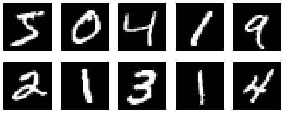
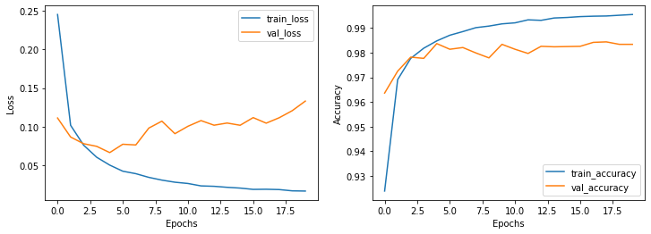

MNIST手写字体分类
Boylad · 2019-11-17
下面的代码训练了一个多层感知机(Multilayer Perceptron, MLP)，在MNIST1数据集上做手写字体分类。训练集有60000张28x28像素的灰度图片，测试集有10000张同样尺寸的图片。批大小设为128，训练20个epoch。
import keras
from tensorflow.keras.datasets import mnist
from tensorflow.keras.models import Sequential
from tensorflow.keras.layers import Dense, Dropout
from tensorflow.keras.optimizers import RMSprop
from sklearn.metrics import confusion_matrix
import matplotlib.pyplot as plt
import numpy as np
batch_size = 128
num_classes = 10
epochs = 20
(x_train, y_train), (x_test, y_test) = mnist.load_data()
x_train = x_train.reshape(60000, 784)
x_test = x_test.reshape(10000, 784)
x_train = x_train.astype('float32')
x_test = x_test.astype('float32')
x_train /= 255
x_test /= 255
查看训练集前10张图片：
plt.figure(figsize = (10, 4))
for i in range(10):
plt.subplot(2,5,i+1)
plt.imshow(x_train[i].reshape(28, 28), cmap='gray')
plt.axis('off')
plt.draw()

将标签One-Hot编码：
y_train_1hot = keras.utils.to_categorical(y_train, num_classes)
y_test_1hot = keras.utils.to_categorical(y_test, num_classes)
y_train_1hot[:10]
训练集标签One-Hot编码后的数组：
array([[0., 0., 0., 0., 0., 1., 0., 0., 0., 0.],
[1., 0., 0., 0., 0., 0., 0., 0., 0., 0.],
[0., 0., 0., 0., 1., 0., 0., 0., 0., 0.],
[0., 1., 0., 0., 0., 0., 0., 0., 0., 0.],
[0., 0., 0., 0., 0., 0., 0., 0., 0., 1.],
[0., 0., 1., 0., 0., 0., 0., 0., 0., 0.],
[0., 1., 0., 0., 0., 0., 0., 0., 0., 0.],
[0., 0., 0., 1., 0., 0., 0., 0., 0., 0.],
[0., 1., 0., 0., 0., 0., 0., 0., 0., 0.],
[0., 0., 0., 0., 1., 0., 0., 0., 0., 0.]], dtype=float32)
搭建MLP，指定输入图片尺寸、中间层的激活函数用ReLU，多分类问题输出层的激活函数用Softmax。
model = Sequential()
model.add(Dense(512, activation='relu', input_shape=(784,)))
model.add(Dropout(0.2))
model.add(Dense(512, activation='relu'))
model.add(Dropout(0.2))
model.add(Dense(num_classes, activation='softmax'))
model.summary()
dense层为全连接层，其中dense_3层有(28x28+1)x512个参数(包括偏置)，dense_4层有(512+1)x512个参数，dense_5输出层有(512+1)x10个参数，dropout层无参数。
Model: "sequential"
_________________________________________________________________
Layer (type) Output Shape Param #
=================================================================
dense (Dense) (None, 512) 401920
_________________________________________________________________
dropout (Dropout) (None, 512) 0
_________________________________________________________________
dense_1 (Dense) (None, 512) 262656
_________________________________________________________________
dropout_1 (Dropout) (None, 512) 0
_________________________________________________________________
dense_2 (Dense) (None, 10) 5130
=================================================================
Total params: 669,706
Trainable params: 669,706
Non-trainable params: 0
_________________________________________________________________
编译并训练模型。用交叉熵损失函数，优化器用RMSprop。
model.compile(loss='categorical_crossentropy',
optimizer=RMSprop(),
metrics=['accuracy'])
history = model.fit(x_train, y_train_1hot,
batch_size=batch_size,
epochs=epochs,
verbose=1,
validation_data=(x_test, y_test_1hot))
plt.figure(figsize=(12,4))
plt.subplot(121)
plt.plot(history.epoch, history.history.get('loss'), label='train_loss')
plt.plot(history.epoch, history.history.get('val_loss'), label='val_loss')
plt.ylabel("Loss")
plt.xlabel("Epochs")
plt.legend()
plt.subplot(122)
plt.plot(history.epoch, history.history.get('accuracy'), label='train_accuracy')
plt.plot(history.epoch, history.history.get('val_accuracy'), label='val_accuracy')
plt.ylabel("Accuracy")
plt.xlabel("Epochs")
plt.legend()
plt.draw()

测试集上预测结果的混淆矩阵：
predict = model.predict(x_test)
classes = [0, 1, 2, 3, 4, 5, 6, 7, 8, 9]
output_test = []
for i in predict:
output_test.append([classes[np.argsort(i)[-1]], i[np.argsort(i)[-1]]])
pre_test = []
for i in output_test:
pre_test.append(i[0])
confusion_matrix(pre_test, y_test, labels=[0,1,2,3,4,5,6,7,8,9])
array([[ 973, 0, 5, 1, 1, 2, 5, 0, 3, 1],
[ 1, 1127, 3, 0, 2, 0, 3, 3, 1, 4],
[ 0, 1, 1011, 1, 2, 0, 0, 5, 2, 0],
[ 1, 2, 5, 999, 0, 5, 1, 1, 4, 8],
[ 0, 0, 1, 0, 967, 1, 3, 0, 2, 10],
[ 2, 0, 0, 2, 0, 879, 3, 0, 6, 3],
[ 2, 2, 0, 0, 3, 1, 941, 0, 2, 1],
[ 1, 1, 4, 3, 1, 1, 0, 1015, 2, 3],
[ 0, 2, 3, 3, 1, 2, 2, 1, 947, 4],
[ 0, 0, 0, 1, 5, 1, 0, 3, 5, 975]])
测试集上预测结果的得分：
score = model.evaluate(x_test, y_test_1hot, verbose=0)
print('Test loss:', score[0])
print('Test accuracy:', score[1])
Test loss: 0.13322639135406414
Test accuracy: 0.9834